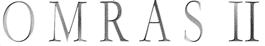

The OMRAS2 Chord Ontology
|
|
 |
Copyright © 2007 the authors above.

This work is licensed under a Creative Commons Attribution License. This copyright applies to the OMRAS2 Chord Ontology Specification and accompanying documentation in RDF. Regarding underlying technology, FOAF uses W3C's RDF technology, an open Web standard that can be freely used by anyone.
Table of Contents
- Introduction
- The Chord Model
- Overview of Terms
- Ontology Terms
- Future Work and Likely Revisions
- References
Introduction
This document describes the first draft of a chord ontology based on work from the Centre for Digital Music, Queen Mary, University of London. It has been created as part of the OMRAS2 project and is intended to provide a common, versatile vocabulary for describing chords and chord sequences in RDF. For more information on RDF and the W3C semantic web technologies on which this work is founded, please see the References section.
The ontology is complete enough to be usable and useful now - some tools for manipulating data from this ontology can be found in the motools project on Sourceforge. However, it is only a first draft and discussions have already brought to light several issues which must be addressed in future versions of the ontology. Some information on likely future revisions, and topics for discussion can be found in the future work section.
All feedback is welcome and if you would like to propose changes or additions to the ontology, the best place to do so is on the Music Ontology mailing list. If you prefer, please feel free to contact any of the authors listed at the top of this document.
Acknowledgements
The authors would like to thank our colleagues in the digital music research community for some very interesting discussions about useful revisions to this ontology. We are keen to make this ontology as widely useful as possible, and future revisions will incorporate input from these discussions and input from the wider community.
The design and layout of this ontology document is based on the Music Ontology and FOAF Vocabulary specification documents.
Namespaces
Several namespaces will be assumed to have been defined for the remainder of this document. These are as follows :
| Prefix | XML Namespace | Description |
|---|---|---|
| chord | http://purl.org/ontology/chord/ | The OMRAS2 Chord Ontology |
| timeline | http://purl.org/NET/c4dm/timeline.owl# | The TimeLine ontology |
| event | http://purl.org/NET/c4dm/event.owl# | The Event ontology |
| mo | http://purl.org/ontology/mo/ | The Music Ontology |
The Chord Model
The ontology uses a model originally based on Christopher Harte's chord notation with some modifications to better suit the domain, and allow more flexibility in the chords which may be described.
Figure 1 - The chord model
Figure 1 shows the model of a chord used by the ontology (represented by the chord:Chord class). All properties are optional, such that one may use a bare Chord resource to indicate simply that some unknown chord is played.
More commonly, a chord will be specified using a root note and some constituent intervals. These are attached using the chord:interval property. The chord inversion may be indicated by specifying which interval is the bass (using the chord:bass property). Currently no further voicing information may be expressed with the ontology.
If the type of chord is known (eg. "these four notes in fact form a minor seventh chord") this information may be indicated by assigning a base_chord. Intervals present in the base chord but not in this particular chord may be indicated using the chord:without_interval property.It is expected that the intervals specified for a chord are exactly the same as the set of intervals present in the given base_chord, minus any which are specified using chord:without_interval properties.
Figure 2 - The note model
Figure 3 - The interval model
Figure 2 shows the note model for the ontology, where a note is either a natural, or a modified version of a natural. The ontology includes individuals for the seven natural notes and all single sharp and flat modifications.
Figure 3 shows the interval model for the ontology. If note names are known, the ScaleInterval class should be used. Otherwise the SemitoneInterval class can be used to indicate pitch without assigning note names. Currently one must still name the root note - this needs fixing.
Example chord description
Figure 4 shows an example chord description : D# minor with added ninth and missing flat third, over the fifth.
Figure 4 - Example of a chord description
The corresponding RDF/N3 description is as follows :
<http://purl.org/ontology/chord/symbol/Ds:min7(*b3,9)/5>
a chord:Chord;
chord:root [ a chord:Note;
chord:modifier chord:sharp;
chord:natural <http://purl.org/ontology/chord/note/D> ];
chord:bass [ a chord:ScaleInterval;
chord:degree 5 ];
chord:base_chord chord:min7;
chord:without_interval [ a chord:ScaleInterval;
chord:degree 3
chord:modifier chord:flat ];
chord:interval [ a chord:ScaleInterval;
chord:degree 1 ],
[ a chord:ScaleInterval;
chord:degree 5 ],
[ a chord:ScaleInterval;
chord:degree 7;
chord:modifier chord:flat ],
[ a chord:ScaleInterval;
chord:degree 9 ].
Chord symbol service
As part of the chord ontology, there is a service to provide RDF descriptions from more compact chord labels. The base URI of the service is <http://purl.org/ontology/chord/symbol/> and chord symbols as defined in [Harte05] may be appended to this base URI to form valid chord URIs, with the one required change that an s character is used in place of the # character.
So for example the URI <http://purl.org/ontology/chord/symbol/D:min7> can be retrieved using a HTTP GET with the "Accept" header set to "application/rdf+xml" to retrieve an RDF description of D minor 7 (Figure 5).
Some further discussion of the semantics of using such shortcuts is required, and the shorthand used by the service may be changed in future, subject to community discussion.Figure 5 - Illustration of using the symbol service
Timeline annotation
The ontology is designed for use in conjunction with the OWL-Time, TimeLine and Event ontologies and so provides a ChordEvent class which can be used to attach chords to a timeline. This timeline may be associated with an audio signal, a musical score, a symbolic music file, etc. using terms from the Music Ontology. An overview of the structures involved is given in Figure 6.
Figure 6 - Example of annotating a timeline
Overview of Terms
An alphabetical index of the ontology terms, divided into classes, properties and individuals. All the terms are hyperlinked to their detailed description for quick reference.
Classes: | Chord | ChordEvent | Interval | Modifier | Natural | Note | ScaleInterval | SemitoneInterval |
Properties: | base_chord | bass | chord | degree | interval | modifier | natural | root | semitone_interval | without_interval |
Individuals: | aug | dim | dim7 | doubleflat | doublesharp | flat | hdim7 | maj | maj6 | maj7 | maj9 | min | min6 | min7 | min9 | minmaj7 | ninth | noChord | note/A | note/Ab | note/As | note/B | note/Bb | note/Bs | note/C | note/Cb | note/Cs | note/D | note/Db | note/Ds | note/E | note/Eb | note/Es | note/F | note/Fb | note/Fs | note/G | note/Gb | note/Gs | seventh | sharp | sus2 | sus4 |
Ontology Terms
Classes
Class: chord:Chord - unstable -
Chord - A representation of two or more notes played together.| in-range-of: | base_chord | chord | |||
|---|---|---|---|---|---|
| in-domain-of: | without_interval | interval | bass | root | base_chord |
Class: chord:ChordEvent - unstable -
ChordEvent - An event signifying that a chord is played.| in-domain-of: | chord |
|---|---|
| sub-class-of: | event:Event |
Class: chord:Interval - unstable -
Interval - An interval above the root of a chord.| in-range-of: | interval | bass |
|---|
Class: chord:Modifier - unstable -
Modifier - A modifier applied to a note to change its pitch.| in-range-of: | modifier |
|---|
Class: chord:Natural - unstable -
Natural - One of the seven natural notes of the Western music system.| in-range-of: | natural |
|---|---|
| sub-class-of: | Note |
Class: chord:Note - unstable -
Note - A musical note which can be one of the seven natural notes or a modified version thereof.| in-range-of: | root | |
|---|---|---|
| in-domain-of: | modifier | natural |
Class: chord:ScaleInterval - unstable -
ScaleInterval - An interval measured in the root scale, made up of the degree of the scale and optional modifier. For use when note names are known.| in-range-of: | without_interval | |
|---|---|---|
| in-domain-of: | modifier | degree |
| sub-class-of: | Interval |
Class: chord:SemitoneInterval - unstable -
SemitoneInterval - An interval measured in semitones. For use when note names are not definitively known.| in-domain-of: | semitone_interval |
|---|---|
| sub-class-of: | Interval |
Properties
Property: chord:base_chord - unstable -
base_chord - The chord on which this one is based.For example, a C7 chord might have chord:Cmaj as its base chord.
All intervals of the base chord are expected to be present in this chord, except when explicitly removed using a without_interval statement.
| Domain: | Chord |
|---|---|
| Range: | Chord |
Property: chord:bass - unstable -
bass - The bass note of the chord (thus indicating the inversion).| Domain: | Chord |
|---|---|
| Range: | Interval |
Property: chord:chord - unstable -
chord - Used to attach the Chord played to a ChordEvent.| Domain: | ChordEvent |
|---|---|
| Range: | Chord |
Property: chord:degree - unstable -
degree - The degree of an interval based on the root of a chord.| Domain: | ScaleInterval |
|---|---|
| Range: | xsd:integer |
Property: chord:interval - unstable -
interval - Associates the Intervals making up a chord with the Chord resource itself.| Domain: | Chord |
|---|---|
| Range: | Interval |
Property: chord:modifier - unstable -
modifier - A modification to a note's pitch.| Domain: | ScaleInterval | Note |
|---|---|---|
| Range: | Modifier |
Property: chord:natural - unstable -
natural - The natural note from which this note is derived.| Domain: | Note |
|---|---|
| Range: | Natural |
Property: chord:semitone_interval - unstable -
semitone_interval - The size of a SemitoneInterval, measured in semitones.| Domain: | SemitoneInterval |
|---|---|
| Range: | xsd:integer |
Property: chord:without_interval - unstable -
without_interval - A degree of the scale expected in the chord but not actually present here.This is intended for the case when a Chord does not include an interval indicated by its base_chord.
| Domain: | Chord |
|---|---|
| Range: | ScaleInterval |
Individuals
Future Work and Likely Revisions
In no particular order, here are some things which might be incorporated in future versions. We are grateful to John Ibbotson of IBM and Tillman Weyde and Jens Wissmann of City University, London for their advice and suggestions. We hope to discuss these more fully via the mailing list - please feel free to give your input on these or other issues there.- Allow absolute pitch specification - by MIDI note number ?
- Explicitly specify whether chords are descriptive or prescriptive (ie. transcription vs. score)
- Specify voicing
- Fully ? (eg. intervals are ordered and include octave information)
- Just whether a chord is played in open, closed or mixed position ?
- Representation of metrical time. Currently the TimeLine ontology doesn't cover this case, but it would be useful (eg. for translating from MMA chord files or scores)
- Fix the requirement to specify a named root note. This would be partly solved by allowing Notes to be specified by absolute pitch.
- Chord shorthands (eg. 'maj', 'min7')
- Do they attach semantics or simply act as a syntactic aid ?
- Should 'jazz' shorthands be used instead of those from [Harte05] ? (can they co-exist without confusion ?)
References
- Semantic Web information
- [Harte05] : Christopher Harte et al. - Symbolic Representation of Musical Chords: A Proposed Syntax for Text Annotations